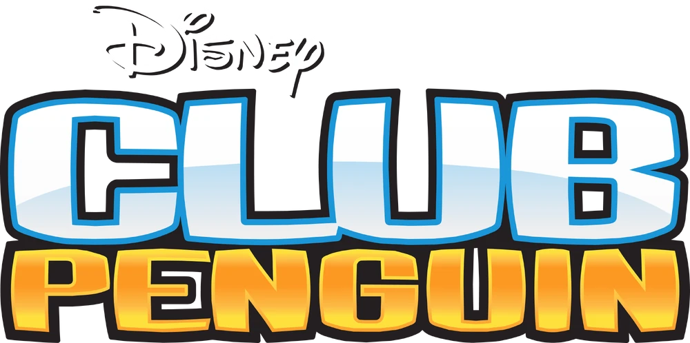
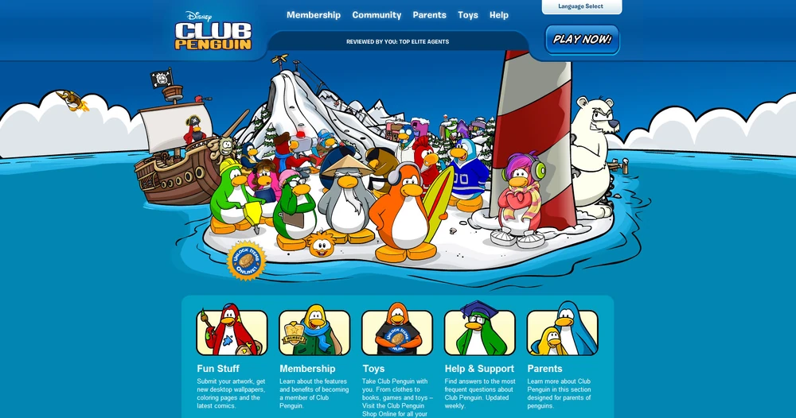
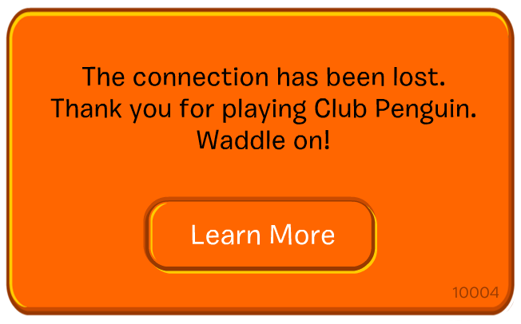
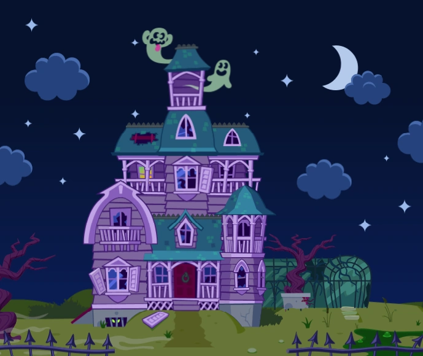
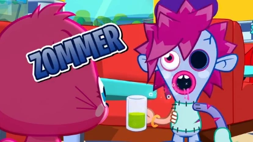
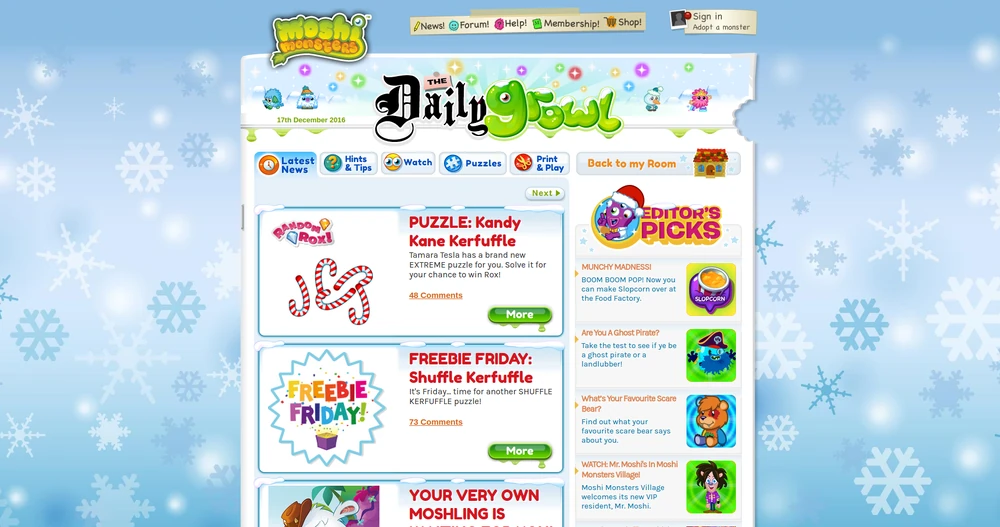

Okay so this is where all of the sad and dead games are, you know... like pixie hollow and stuff :[ it's really tragic ://// I remember BEGGING my mom to get me a club penguin membership. It was between that or Moshi Monsters lawl :P.
every1 though I was a boy though in Club Penguin becuz I had a top hat on XD. Like they aren't just cool!!
every1 though I was a boy though in Club Penguin becuz I had a top hat on XD. Like they aren't just cool!!
Club Penguin
★ October 24, 2005 - Club Penguin is released to the public, despite having no budget for advertisements,
it proves to be a smash hit, garnering 1.6 million players by the end of it’s first year.
★ August 2007 - Club Penguin is acquired by Disney for over 300 million USD.
★ September 2011 - Spinoff app Puffle Launch is created
★ July 2013 - Club Penguin reaches its peak, with over 200 million active players
★ April 2015 - It is announced that layoffs are happening on the Club Penguin team, later during that year the German and Russian version are taken down
★ March 30, 2017 - Club Penguin is taken offline. It was removed among a dwindling playerbase
to make way for it's successor, Club Penguin Islands. Club Penguin Islands shuts down in December of 2018, after only 13 months of activity.
★ Is it still accessible today? - No. Previous fanworks were removed in a DMCA takedown by Disney, with the largest projects being removed in
2020 and 2022 respectively.
|
 |
 |
 |
Pixie Hollow
★ October 28, 2008 - The first Tinkerbell movie comes out. Around the same time, Disney and Schell Games released the Pixie Hollow video game.
★ September 19, 2013 - Pixie Hollow shut down. Since then, many spin-offs of the game have been created such as We the Pixies.
★ Why was it shut down? - On September 19, 2013, Pixie Hollow was shut down alongside many other Disney online games as Disney shifted its focus and game budget to its mobile and console games, the most notable of which being Disney Infinity which was released on August 18, 2013.

|

|

|
Cartoon Network Games
★ Early 2000 s - Cartoon Network Interactive starts releasing online games based on Cartoon Network’s animated shows alongside console and handheld games.
★ Adobe Flash - As more people are introduced to network games, Cartoon Network is able to launch more games through the use of Flash.
★ 2014 - Cartoon Network Interactive rebrands to Cartoon Network Games.
★ August 8, 2024 - Cartoon Network Games’ official website is shut down.
★ Are they still accessible today? - Though no longer available by the official Cartoon Network Games, you can still play many of its games through other websites and archives such as the online Web Design Museum.

|

|
Moshi Monsters
★ April 16, 2008 - Moshi Monsters is released by Mind Candy to the public aimed at users aged 6-12
★ 2012 - Moshi Monsters Reaches it's peak revenue
★ 2015 - Moshi Monsters begins to experience a deline in playerbase.
★ December 13, 2019 Moshi Monsters is taken down due to the ending of Adobe Flash.
★ 2025 - It is announced that they will be relaunching Moshi Monsters as a pet simulator app in 2027.
★ Is it still accessible today? - No, but it will be in the future, but not as the same thing.
|
 |
 |
 |